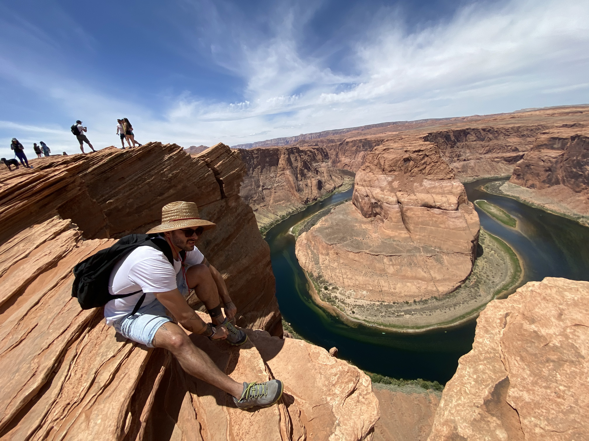

Drums solo

About this fellow
Born and raised in Cuba, I started studying Music at the age of 6 years old. I got approved to start in Classic Piano and then I started drums whilst keeping my piano classes. When I turned 14 years old I went on my first Tour outside of Cuba and was lucky enough to play Timbales for Buena Vista Social Club at 19 years old and a couple of years later I played on the Eurpean tour for Josh Groban.In 2006 I earned my Bachelors degree in Music performance and started focusing on how to adapt afrocuban rythms in to contemporary jazz. In 2013 I moved to New York city.